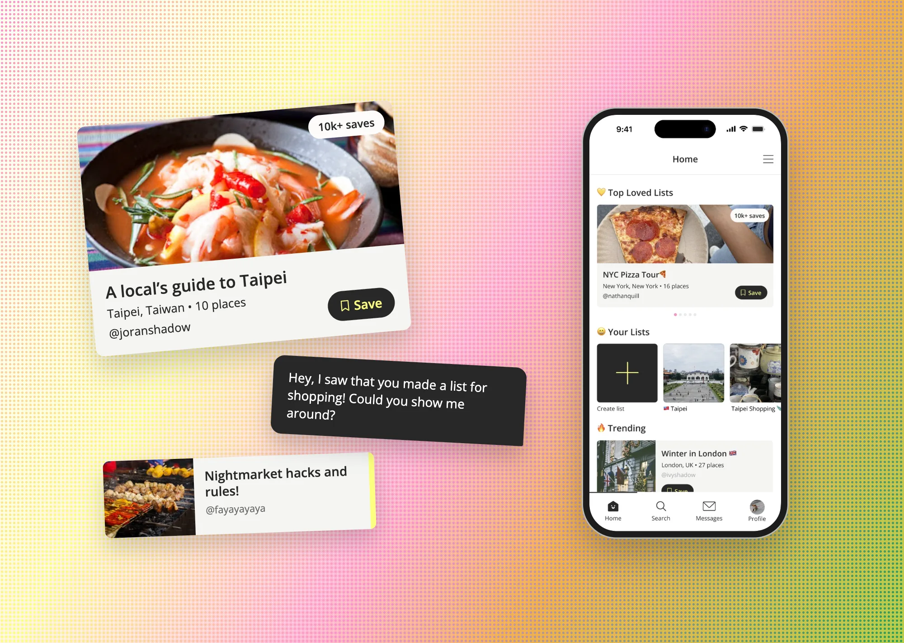
Wanderly:
Authentic connections between locals and travelers
Overview
Imagine showing someone around your beloved hometown. The places you'd take them probably aren't the ones in the travel guides.
Wanderly is a travel app for authentic connections between locals and travelers. We designed it in response to the United Nations Sustainable Development Goal of Sustainable Cities and Communities, to address tourism overgrowth and the cultural erosion caused by surface-level travel trends that overshadow local culture and disrupt communities.
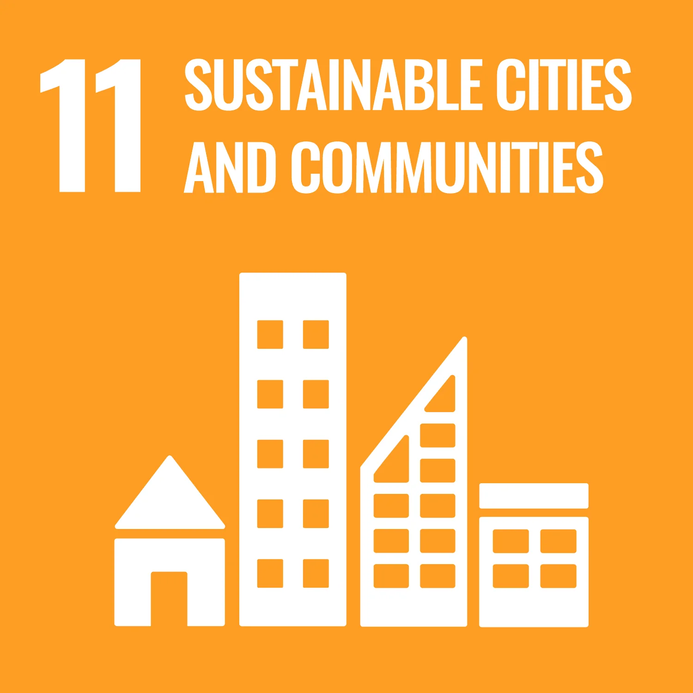
Wanderly fosters genuine connections between locals and travelers, and gives them a community for exchanging tips and recommendations.
The Problem
Popular destinations lack systems that manage the flow of tourists, teach visitors how to behave respectfully, and let local communities share their history and stories. Ethical tourism lets places preserve and share their culture without harming the people who live there.
Further reading: Japan Likes Tourists, Just Not This Many ↗
We can't solve overtourism. But we can soften its impact by promoting mindful travel: curated recommendations that foster authentic cultural exchange and preserve a destination's heritage.
The Solution
Wanderly promotes authentic tourism by letting locals share personal recommendations and tips.
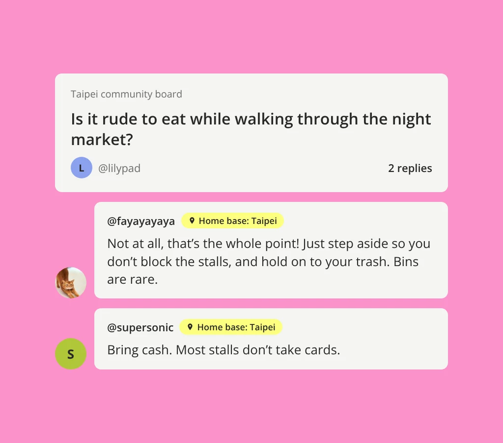
The community board lets travelers and locals discuss topics like cultural expectations. Community posts share tips and insights on respecting a destination's norms.
Users can view etiquette and tips from travelers and locals for specific places, like restaurants and monuments.
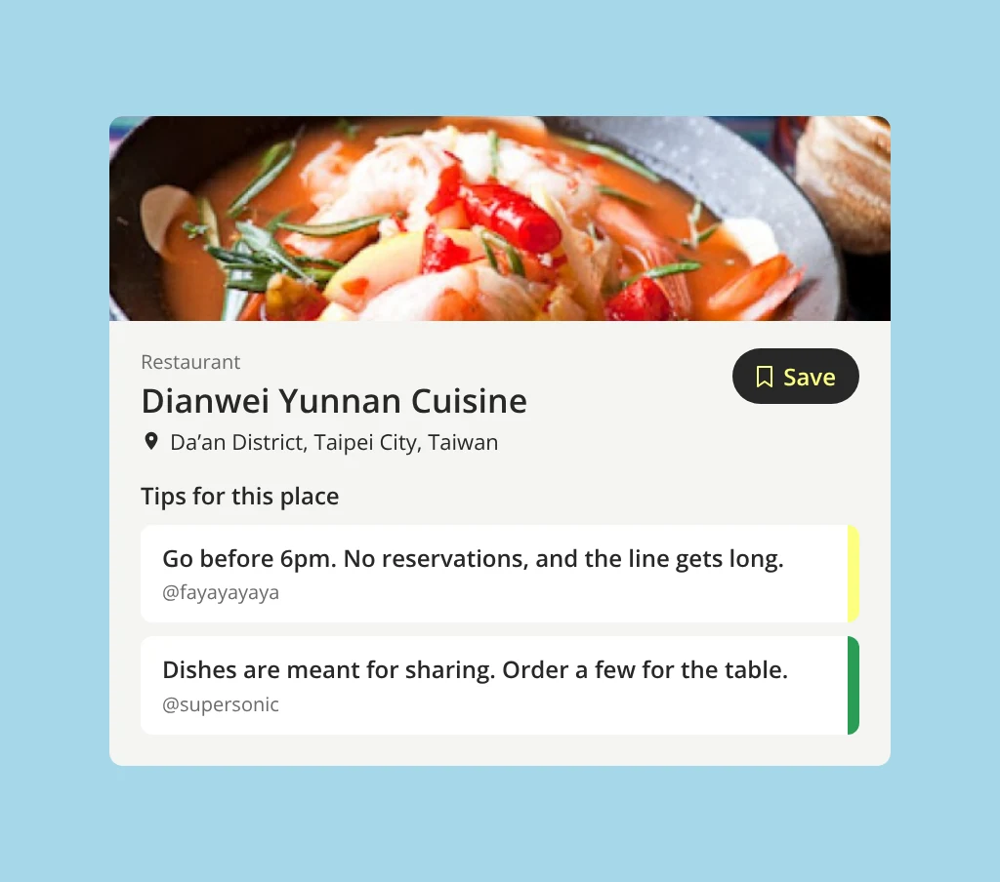
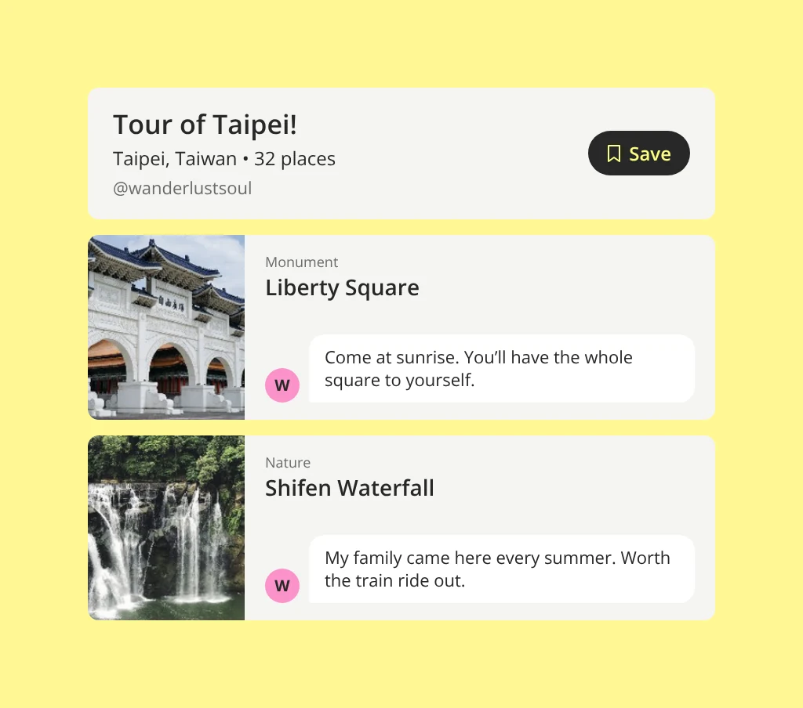
Users can create, explore, save, and share lists of authentic recommendations, with places they want to visit or share with others.
Locals and tourists are able to develop an authentic connection and learn from each other.
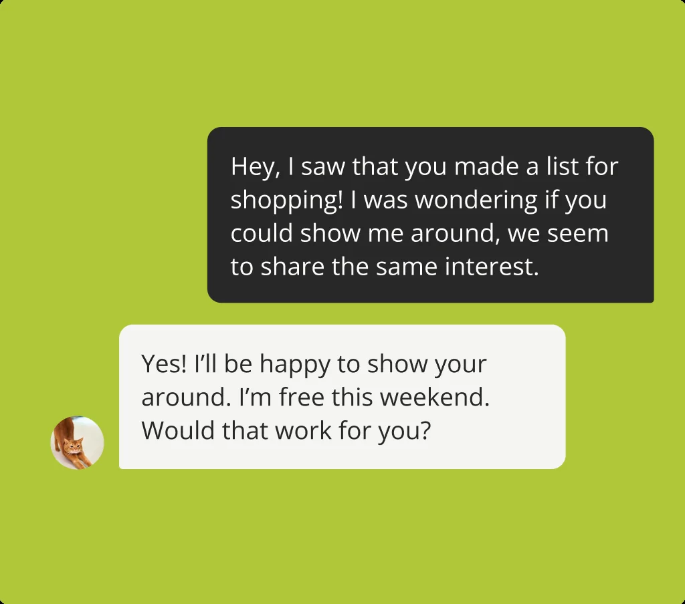
Research
Desk research
Many tourists travel for surface-level recommendations and trends rather than for an area's cultural value. As a result, culturally significant attractions suffer from cultural erosion, local businesses lose customers, and regional history is overshadowed. Yet ideally, tourists want to experience the important parts of the destination's culture, such as notable places and authentic food.
A few existing approaches try to address this: travel tours, cultural guides, educational programs, and more. Travel tours can work well if structured to respect the area's culture and community, but they have a reputation for overcrowding areas and feeding into tourist traps. Cultural guides and educational programs do work well in involving the local community in tourism and preserving culture, but they are often less popular among tourists and require time and effort from communities that they may not have.
Competitive analysis
Our main problem is the lack of efficient systems for cultural education and conscious travel tips between locals and tourists. To address it, our solution needs:
- A robust messaging system where locals and tourists can communicate
- A space where locals can make recommendations and tourists can browse through them
- Educational information on cultural and historical sites that tourists need to know before visiting
We looked at two platforms that are popular in the tourist space: Airbnb, which offers bookable accommodations and experiences, and Tripadvisor, which helps travelers plan a trip through reviews and bookings for destinations, accommodations, restaurants, and activities.
Airbnb: direct messaging lets users ask hosts about a booking or experience, but it is not commonly used for relationship building.
Tripadvisor: direct messaging is meant for reaching out to others based on posted reviews. It serves information seeking rather than relationship building, and it is hard to find: users have to go through another user's profile or a popup menu under the profile icon.
Airbnb: experiences are structured, specific, and thought out from a local's perspective, but they leave less room for casual, authentic exploration, and some are about learning a skill rather than exploring.
Tripadvisor: recommendations are personalized by location, behavior, popularity, and ratings, and users can judge them through reviews. But they are partly based on superficial factors such as popularity, the authenticity of tours is not guaranteed, and reviews can be skewed by manipulation or tourist-centered viewpoints.
Airbnb: experiences are meant to be educational and authentic to their topic, but education may be limited to that topic and may not represent the location's culture.
Tripadvisor: tours are meant to be educational, but a focus on profitability can hurt the authenticity and sincerity of the experience.
Overall, there is a lack of opportunity to make connections and cultural exchange. There also seems to be a lack of options for more private or introverted travelers who still want to educate themselves on the local culture but do not necessarily want to engage in large group experiences.
In seeing how these platforms aim to provide authentic experiences to travelers, we want to build on that in a non-transactional way: locals connect with travelers by sharing what they love about where they live.
Interviews
We talked to five locals and five travelers from places such as New York City and Bangkok.
- Tourists: 18+, traveled to at least one destination in the past year, with a desire to explore local culture and history.
- Locals: 18+, live or lived for five years in a location that regularly receives tourists, with some experience interacting with tourists through work or informally in their community.
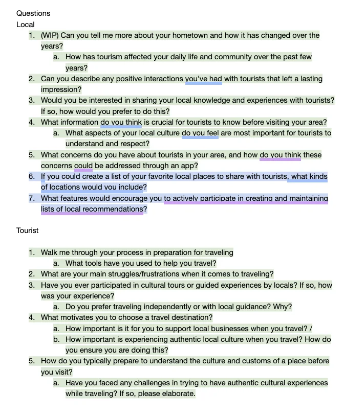
Then we affinity mapped our conversations and grouped our notes into seven themes:
- Difficulty in planning authentic and custom experiences
- Social interaction preferences
- Preference and motivation for personalized recommendations
- Perceptions of tourists
- Discoverability of travel destinations
- Commercial vs. authentic experiences
- Cultural awareness and respect
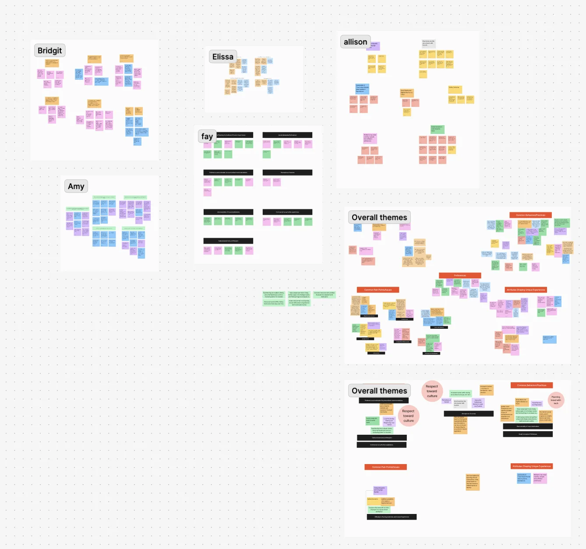
- Travelers use search engines to find information on destinations, such as local guides. However, the recommendations can be inaccurate, overcrowded, or inauthentic.
- Travelers enjoy finding "hidden gems" and experiencing local culture.
- Travelers generally enjoy meeting and learning from locals.
- Locals often talked about tourists disrespecting local customs and disturbing the community.
- Locals vary on how much they want to interact with travelers, but would like to share authentic recommendations, like small businesses, whether in person or through social media.
"You should be curious about the place's culture that you're traveling to."
— A traveler we interviewed
Personas + Scenarios
Four personas, two primary
While interviewing people, we got many different kinds of responses: locals who were not as enthusiastic about tourists and sharing their knowledge with them, travelers who were not interested in authentic travel experiences, and vice versa. To account for these attitudes, we came up with a variety of personas.
Our two primary personas, the Excited Local and the Intense Traveler, are most likely to be interested in our solution. Our secondary personas are the Reclusive Local and the Casual Traveler.
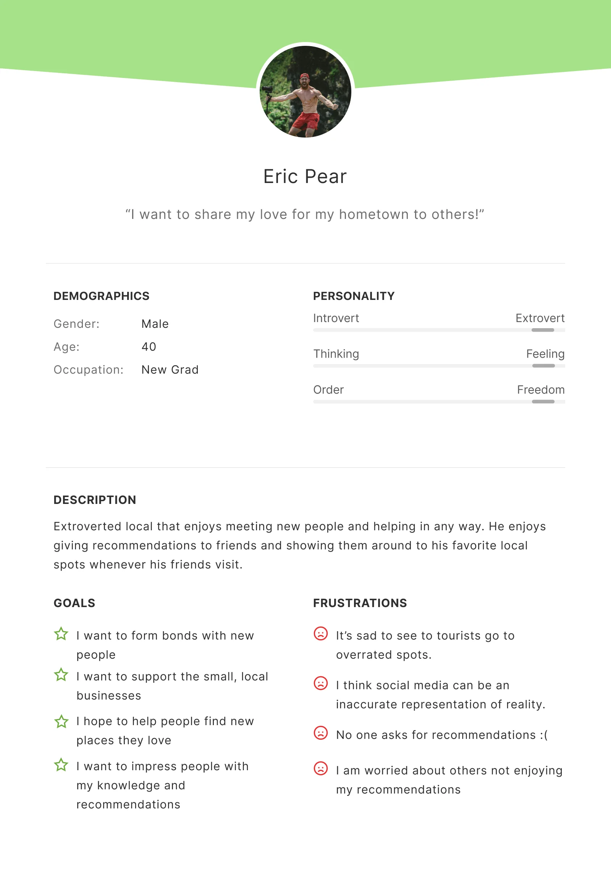
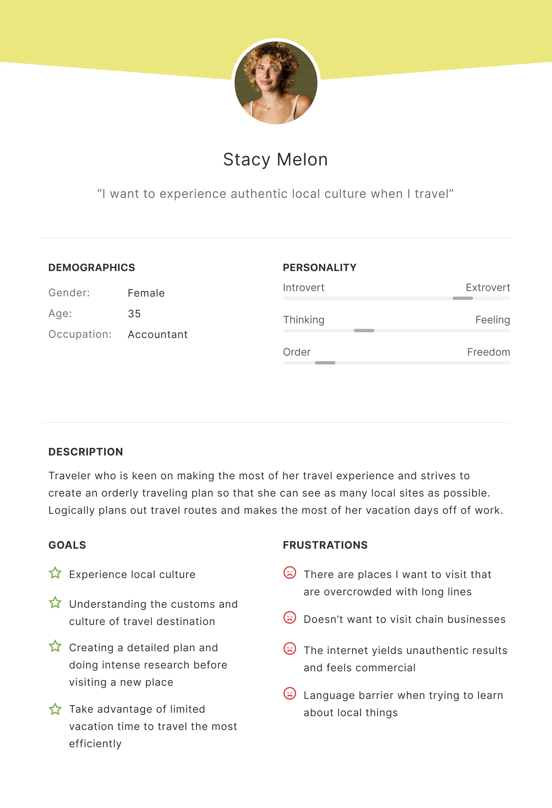
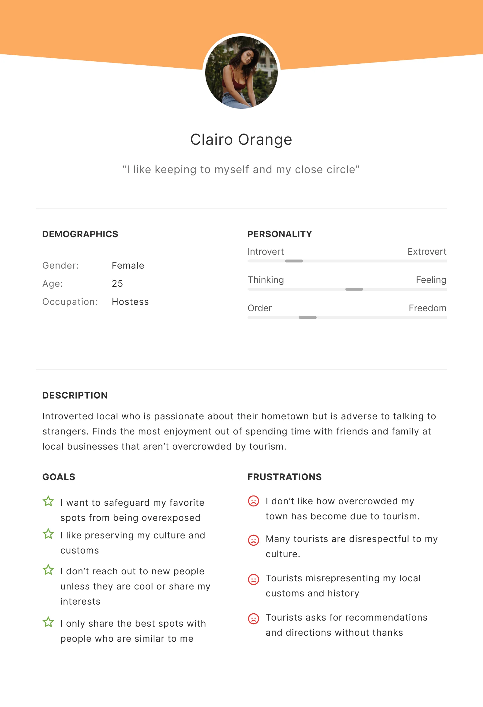
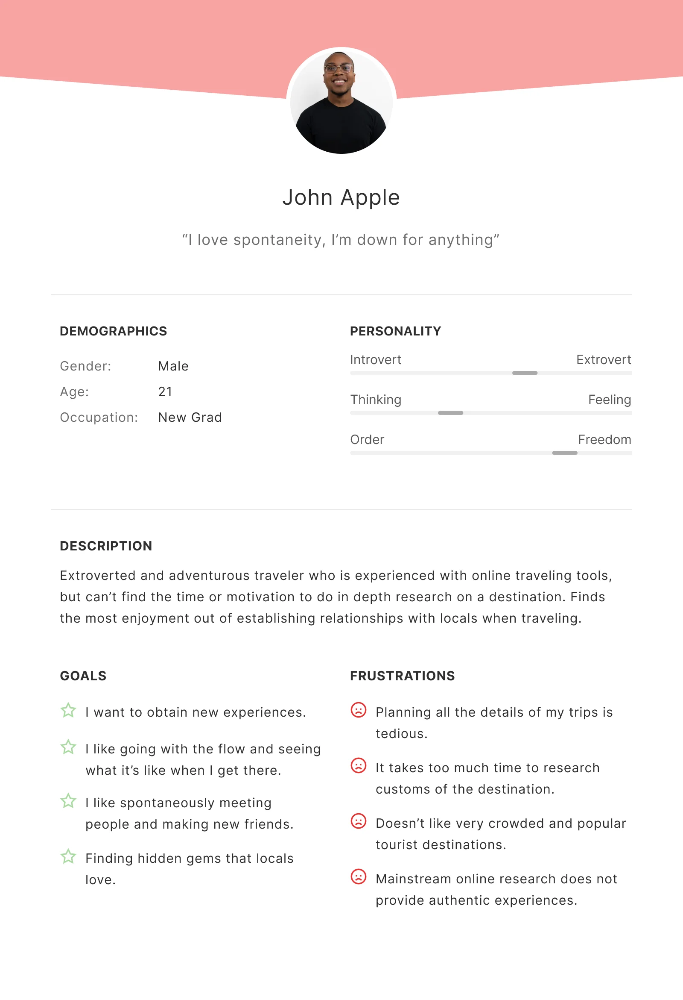
- The Excited Local enjoys meeting new people and is motivated to offer recommendations and knowledge about their place.
- The Intense Traveler is mainly frustrated with the lack of resources for, and barriers to, finding local experiences.
- The Reclusive Local is less likely to interact with tourists and would rather keep their favorite places to themselves and their close circle. However, they wouldn't mind connecting with new people as long as they seemed likable, shared similar interests, and were respectful.
- The Casual Traveler is adventurous and spontaneous, but doesn't have the time to plan out trips very well. They rely on going with the flow to meet new people and have fun experiences.
Scenarios + storyboards
We created scenarios and accompanying storyboards for each persona to understand what different types of potential users might experience in the context of travel. By walking through their perspectives, we could identify key opportunities and areas where design solutions can directly address user frustrations.
John Apple is traveling around Spain for three weeks at the end of December, in peak season. In Barcelona he goes to La Sagrada Familia, but there are too many visitors and he can't get in without a reservation. He doesn't know where to go for the day and has no friends in the city. He asks locals for recommendations, but no one slows down to help and the language barrier puts him off. He then searches for an online forum with recommendations from locals and is finally able to find an authentic and less busy place to go.
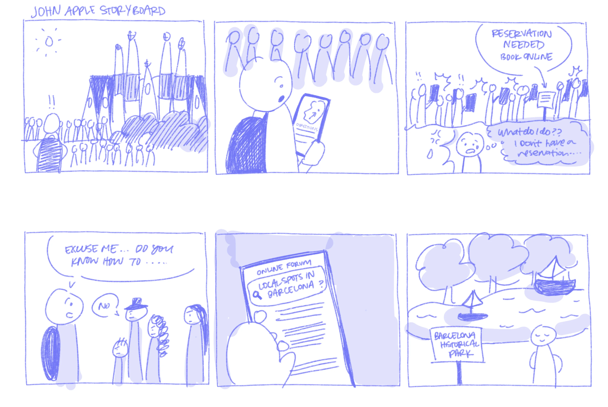
Stacy Melon is using her last vacation days of the year to go to Japan, so she plans every aspect of her trip. Every website yields the same repetitive results, so she books a locally guided tour off the beaten path. In Kyoto she is disappointed by the long waits and overwhelmed by the crowds. She asks her tour guide for advice, who suggests visiting popular spots during non-peak hours and exploring less-known neighborhoods and smaller temples. With this insider knowledge, Stacy adjusts her plans and discovers peaceful, authentic parts of Kyoto.
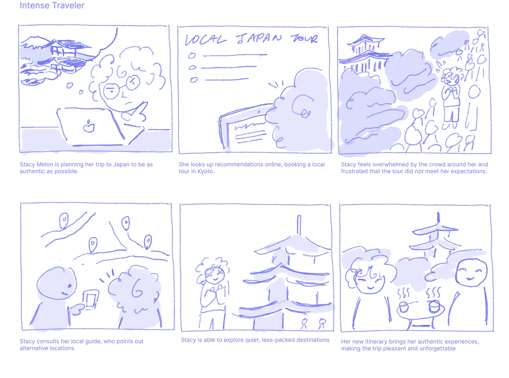
Brainstorm
Our research left us with three goals:
- Travelers and locals can vary greatly in how much they want to engage with each other. Knowing this, we want to create a range of interactions that can cater to these different users.
- We want to stray away from a transactional model and promote connection between travelers and locals.
- We want travelers to be able to experience a destination authentically and respectfully.
Learning about travel destinations from social media was also mentioned very often in our interviews, and we ourselves found examples of locals online sharing personal recommendations for travelers. For example, on TikTok, people make videos about their favorite spots in their local destination:
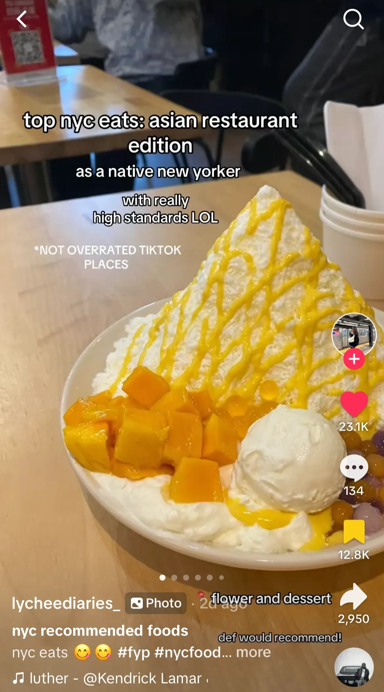
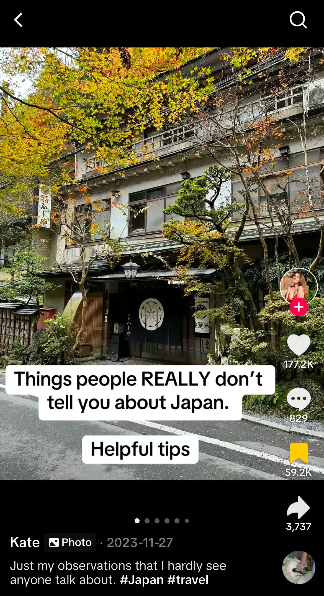
We want to encourage locals to share their beloved favorite spots with travelers, and for travelers to be motivated to learn from locals about their destinations.
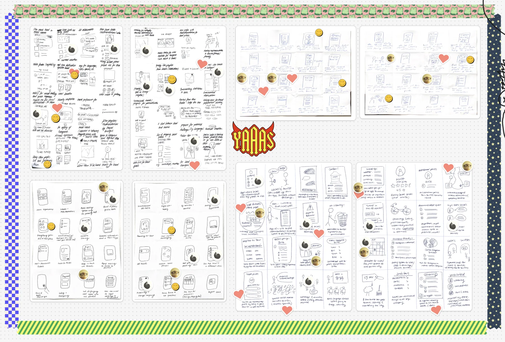
We each rapidly sketched out ideas for features that would support our goals, and discussed which ones were most relevant and useful. Some highlights:
- Locals recommending places. Lists of a local's favorite spots, with notes on why each one matters to them.
- Matching locals and travelers. A way to message someone who knows the city, and meet up if both want to.
- Heads-ups for visitors. Tips on etiquette and things to be careful about, so a visit doesn't disrupt the community.
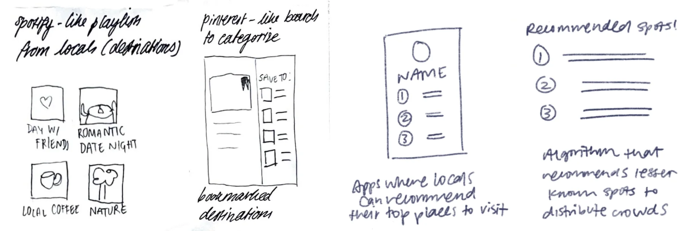
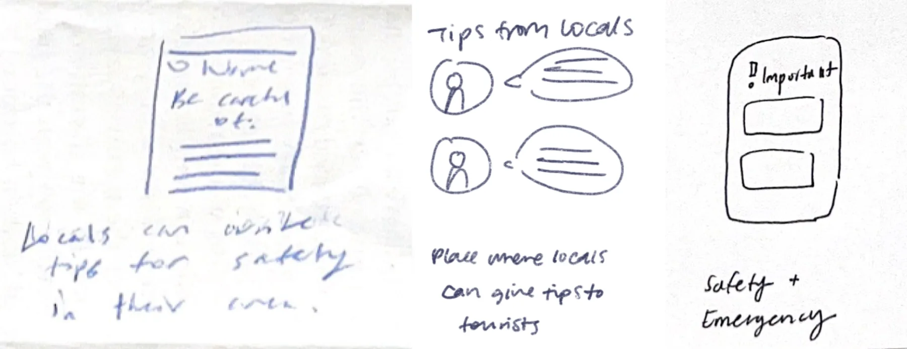
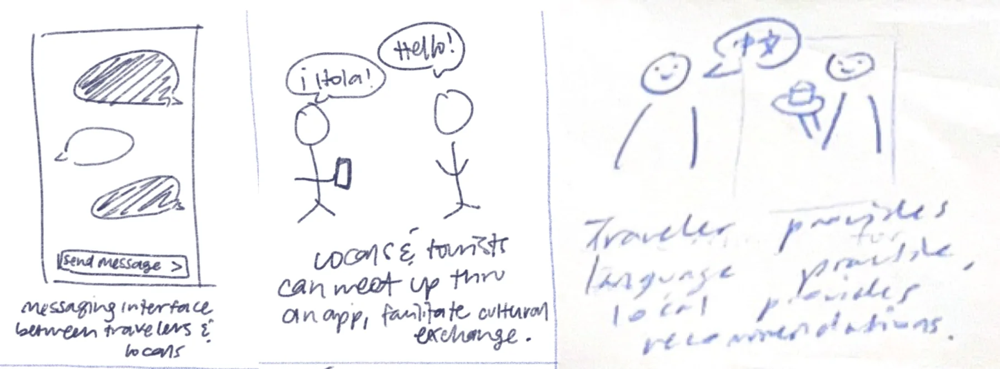
These became our three pillars: lists, messaging, and travel tips.
Lo-fi Prototype
We built the lo-fi prototype around two tasks from our user flow: saving a discovered place to a personal list and finding it again in your profile, and finding locals in a chosen city to organize a meetup through messaging.
Three decisions shaped this version:
We chose not to build separate local and tourist views. Everyone is a local somewhere and a traveler elsewhere, so profiles show which cities a person is local to.
Inspired by Spotify, search results are split into tabs for people, places, and lists. With so few options, showing them all saves a tap. The profile uses the same pattern for created versus saved lists.
Inspired by Instagram notes, list creators can explain why each place made their list, which makes a recommendation feel personal.
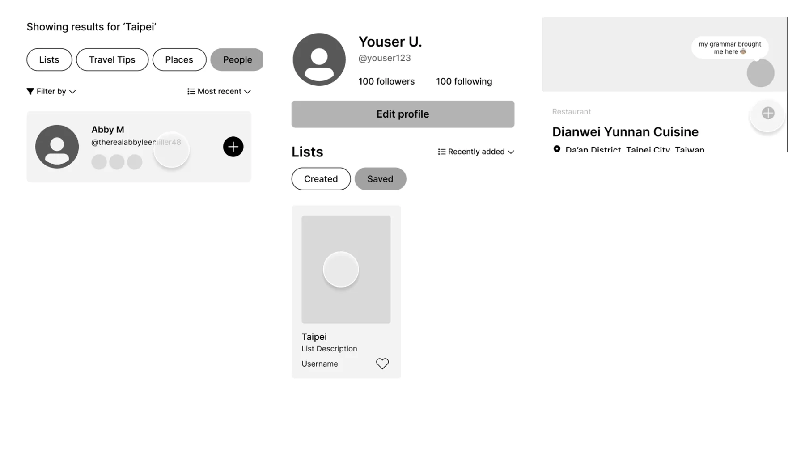
Lo-fi wireframes: search result tabs, the profile's created and saved lists, and a creator note on a place.
What didn't work: with five of us wireframing in parallel and no shared design system, key pages came out inconsistent and were slow to correct. We committed to a style guide and Figma components before moving to hi-fi.
Feedback + Usability Testing
We put the digital prototype in front of five users. What we heard led to five improvements:
Users reached for a sidebar menu and looked for their profile in the wrong place. We moved the profile from the top right into the bottom navigation bar and repositioned the hamburger menu.
Users weren't sure what could be searched: places, people, or lists. We streamlined the filters and standardized the size, placement, and wording of tags.
Several participants didn't know a people search existed, and one expected people to appear under the "All" tab. We made the People tab more visible and added entry points from the home and search pages.
A heart for liking and a plus for saving confused users about where things ended up. We consolidated these into a single labeled Save button, which adds a place to a favorites folder or any list.
Controls like the checkmark for adding a place to a list were too small. We enlarged clickable areas and paired icons with text for key actions like saving and messaging.
Users also tapped home page elements that weren't wired up, so we connected every page and flow in the final prototype.
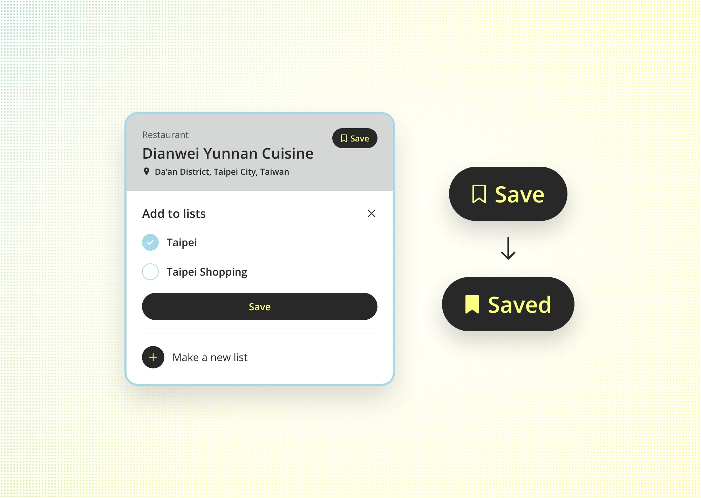
The single labeled Save button, with its add-to-lists sheet.
Hi-fi Prototype
First, we fixed our consistency problem. We built a style guide for color and typography and a shared component library, so every screen used the same buttons, tabs, and navigation.
The final prototype has three main areas:
- Home. Browse popular and featured lists for different locations, alongside your own.
- Search. Recommended places near you by category (food, nature, culture). Searching a destination opens an overview with a map, lists, people whose home base is that city, and travel tips.
- Profile. Your saved places and lists, filterable by created or saved.
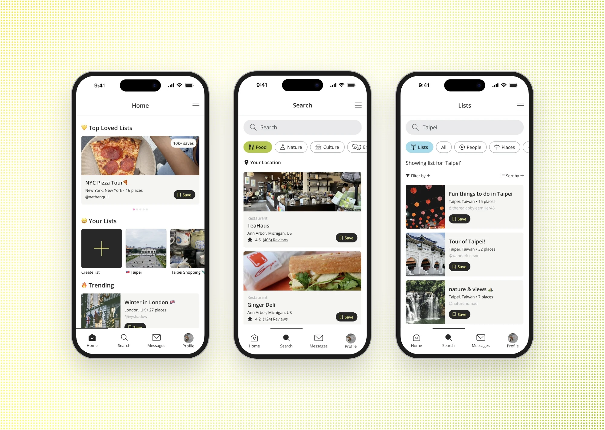
Home, Search, and Lists results for Taipei.
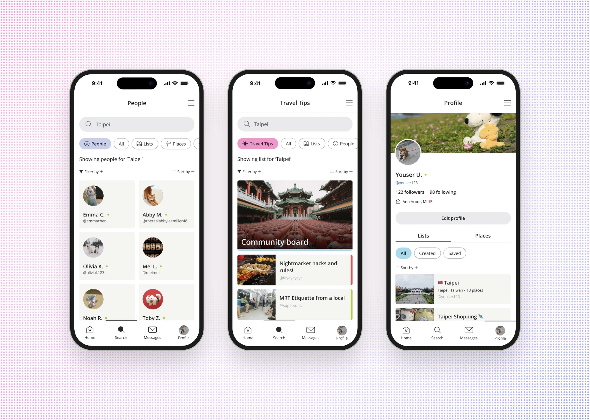
People results, Travel Tips with the community board, and Profile.
The feature we were most excited about is memos: personal notes attached to each place in a list, so a recommendation carries someone's memory of it. We also added a community board for each destination, where locals and travelers share etiquette and tips.
Two things we deliberately left out:
- "Local" and "traveler" tags. The label would change depending on the city being viewed, so profiles show home bases instead.
- Verifying locals at onboarding. We chose a trust system to keep the barrier to entry low.
Reflection
Usability testing showed that features we thought were obvious, like people search and saving, were hard to find. Facilitating those sessions showed me how far our mental model was from our users'.
Sending travelers to hidden gems could overcrowd those places too. One local I interviewed worried that tourism brings people who move in and change a community. With more time, I'd explore de-emphasizing places that are getting saturated, and stronger safety measures around meeting strangers.
This project came together because of my teammates on Pumpkin Patch. Thank you for the ideas, the sketches, and the patience with my timelines!
Thank you for reading! If you have any questions about this project, feel free to email me at bridgit.jung@gmail.com! ✶⋆.˚
next project Inkedbook Streamlining tattoo artist discovery and scheduling